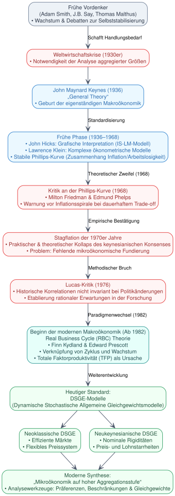

Code
import graphviz
from IPython.display import display, SVG
# Graph-Definition mit vertikaler Ausrichtung (Top-Bottom)
dot = graphviz.Digraph(comment='Geschichte der Makroökonomik', format='svg')
dot.attr(rankdir='TB')
# Globale Knoten- und Kanten-Styles für ein akademisches, sauberes Layout
dot.attr('node', fontname='Helvetica,Arial,sans-serif', fontsize='11', shape='box', style='filled,rounded')
dot.attr('edge', fontname='Helvetica,Arial,sans-serif', fontsize='10', color='#4A5568', arrowhead='vee')
# --- STYLE CONFIGURATION (Farbpaletten für die Epochen) ---
color_pre = {"fillcolor": "#EDF2F7", "color": "#718096", "fontcolor": "#2D3748"} # Grau (Vorgeschichte)
color_keynes = {"fillcolor": "#EBF8FF", "color": "#3182CE", "fontcolor": "#2B6CB0"} # Blau (Keynesianismus)
color_crisis = {"fillcolor": "#FFF5F5", "color": "#E53E3E", "fontcolor": "#9B2C2C"} # Rot (Krise & Kritik)
color_modern = {"fillcolor": "#E6FFFA", "color": "#319795", "fontcolor": "#234E52"} # Teal (Moderne/RBC)
color_heute = {"fillcolor": "#F0FFF4", "color": "#38A169", "fontcolor": "#22543D"} # Grün (Synthese/Heute)
# --- KNOTEN DEFINITIONEN ---
# 1. Vorgeschichte
dot.node('Vordenker', 'Frühe Vordenker\n(Adam Smith, J.B. Say, Thomas Malthus)\n• Wachstum & Debatten zur Selbststabilisierung', **color_pre)
# 2. Die Geburtsstunde
dot.node('Krise', 'Weltwirtschaftskrise (1930er)\n• Notwendigkeit der Analyse aggregierter Größen', **color_crisis)
dot.node('Keynes', 'John Maynard Keynes (1936)\n„General Theory“\n• Geburt der eigenständigen Makroökonomik', **color_keynes)
# 3. Früher keynesianischer Konsens
dot.node('Hicks', 'Frühe Phase (1936–1968)\n• John Hicks: Grafische Interpretation (IS-LM-Modell)\n• Lawrence Klein: Komplexe ökonometrische Modelle\n• Stabile Phillips-Kurve (Zusammenhang Inflation/Arbeitslosigkeit)', **color_keynes)
# 4. Zusammenbruch und Kritik
dot.node('Friedman', 'Kritik an der Phillips-Kurve (1968)\n• Milton Friedman & Edmund Phelps\n• Warnung vor Inflationsspirale bei dauerhaftem Trade-off', **color_crisis)
dot.node('Stagflation', 'Stagflation der 1970er Jahre\n• Praktischer & theoretischer Kollaps des keynesianischen Konsenses\n• Problem: Fehlende mikroökonomische Fundierung', **color_crisis)
dot.node('Lucas', 'Lucas-Kritik (1976)\n• Historische Korrelationen nicht invariant bei Politikänderungen\n• Etablierung rationaler Erwartungen in der Forschung', **color_crisis)
# 5. Moderne Makroökonomik
dot.node('RBC', 'Beginn der modernen Makroökonomik (Ab 1982)\nReal Business Cycle (RBC) Theorie\n• Finn Kydland & Edward Prescott\n• Verknüpfung von Zyklus und Wachstum\n• Totale Faktorproduktivität (TFP) als Ursache', **color_modern)
# 6. Heutiger Zustand
dot.node('DSGE', 'Heutiger Standard:\nDSGE-Modelle\n(Dynamische Stochastische Allgemeine Gleichgewichtsmodelle)', **color_heute)
# Sub-Pfade für heutige Aufteilung (nebeneinander angeordnet unter DSGE)
with dot.subgraph() as s:
s.attr(rank='same')
s.node('Neoklassisch', 'Neoklassische DSGE\n• Effiziente Märkte\n• Flexibles Preissystem', **color_heute)
s.node('Neukeynesianisch', 'Neukeynesianische DSGE\n• Nominale Rigiditäten\n• Preis- und Lohnstarrheiten', **color_heute)
dot.node('Fazit', 'Moderne Synthese:\n„Mikroökonomik auf hoher Aggregationsstufe“\n• Analysewerkzeuge: Präferenzen, Beschränkungen & Gleichgewichte', **color_heute)
# --- KANTEN DEFINITIONEN (Logischer, chronologischer Fluss) ---
dot.edge('Vordenker', 'Krise', label=' Schafft Handlungsbedarf')
dot.edge('Krise', 'Keynes')
dot.edge('Keynes', 'Hicks', label=' Standardisierung')
dot.edge('Hicks', 'Friedman', label=' Theoretischer Zweifel (1968)')
dot.edge('Friedman', 'Stagflation', label=' Empirische Bestätigung')
dot.edge('Stagflation', 'Lucas', label=' Methodischer Bruch')
dot.edge('Lucas', 'RBC', label=' Paradigmenwechsel (1982)')
dot.edge('RBC', 'DSGE', label=' Weiterentwicklung')
dot.edge('DSGE', 'Neoklassisch')
dot.edge('DSGE', 'Neukeynesianisch')
dot.edge('Neoklassisch', 'Fazit')
dot.edge('Neukeynesianisch', 'Fazit')
# NEU: Generiert und speichert die Datei 'geschichte_makrooekonomik.svg' im aktuellen Verzeichnis
dot.render('geschichte_makrooekonomik', cleanup=True)
# Diagramm weiterhin direkt im Jupyter Notebook anzeigen
display(SVG(dot.pipe(format='svg')))